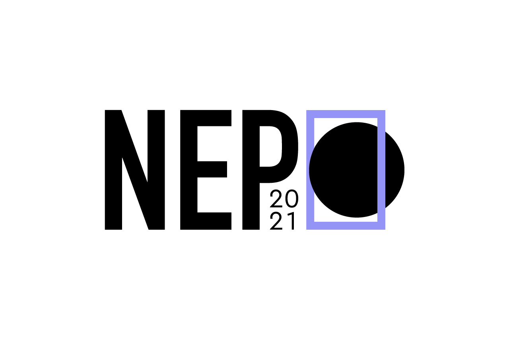

Pasquale Bassu
(Nuoro, 1979)
Biografia
Nasce nel 1979. Si avvicina all’arte dell’incisione a Nuoro, città dove è nato e attualmente vive. SeunaLab, collettivo di artisti nuoresi nato nel 2006, si rivela uno stimolante ambiente artistico che gli permette di sperimentare e di misurarsi con la fluidità creativa. È laureato all’Accademia di Belle Arti a Sassari. Ad oggi, ha focalizzato se sue competenze verso la linografia tramite la quale affronta importanti tematiche socio-politiche. È stato partecipe di diverse mostre collettive e personali.
Io sono stato
LINOGRAFIA 16 X 8,5 cm